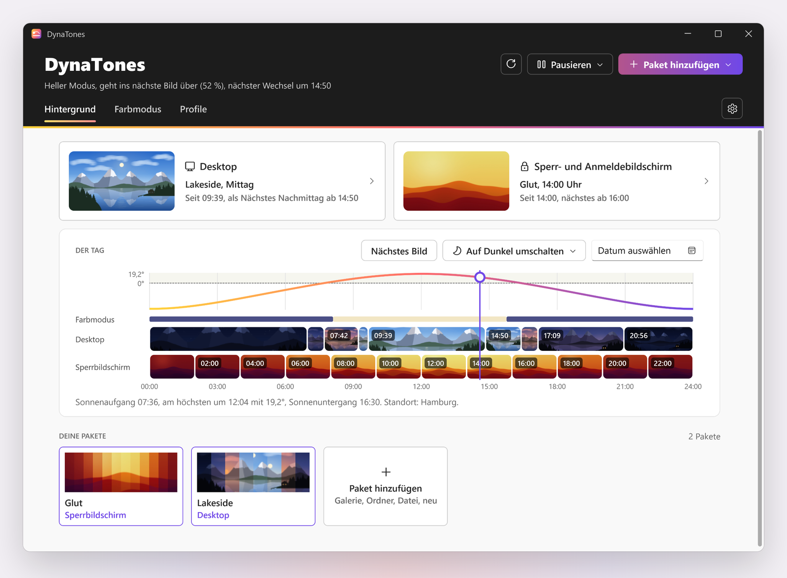
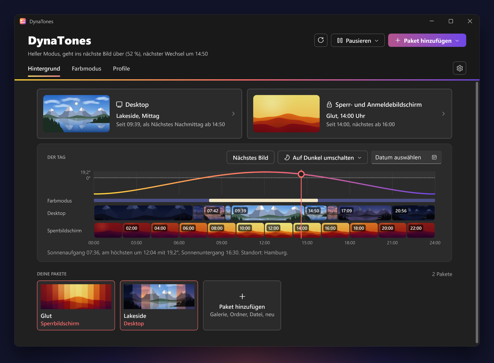

Was es kann
Licht, das fließt
Vor dem nächsten Bild blendet DynaTones die beiden jede Minute ein Stück weiter über, über 10, 30 oder 60 Minuten. Derselbe Ort ändert langsam sein Licht.
Richtig im Juni und im Dezember
Jedes Bild hat seinen Platz auf dem Bogen der Sonne, steigend oder sinkend. Ein Mittagsbild kommt auch im Winter mittags.
Hintergrundbild und Farbmodus zusammen
Farbmodus nach der Sonne mit Versatz, zu festen Zeiten oder passend zum Bild. Apps, Windows und Mauszeiger jeweils für sich. Hell oder dunkel sofort aus dem Tray, oder gleich die nächste Phase mit ihrem Bild.
Deine eigenen Bilder
Zieh einen Ordner oder eine .zip auf das Fenster. Automatisch ordnet die Bilder nach Zeit und Ort im Foto ein, oder danach, wie hell sie wirken.
Bleibt auf Kurs
Nach dem Energiesparmodus, dem Entsperren, einer geänderten Uhrzeit oder einem neuen Bildschirm prüft DynaTones, was zu sehen sein soll, und stellt es wieder her.
Auch der Sperrbildschirm
Wenn du willst, folgt auch der Sperrbildschirm dem Tag, mit den Bildern des Desktops oder einem eigenen Paket.


Herunterladen
Für Windows 11, und es läuft auch auf Windows 10.
Für Organisationen
Pro Gerät für alle Benutzer installieren, still oder über das Setup. Einstellungen lassen sich über Gruppenrichtlinien oder Intune mit ADMX-Vorlagen festlegen oder als Vorgaben setzen, die Benutzer ändern können. Updates bleiben dann in der Hand eurer IT. Leitfaden für Admins (Englisch)
Das Setup ist noch nicht signiert. Windows SmartScreen warnt vielleicht vor einem unbekannten Herausgeber: Wähle „Weitere Informationen“, dann „Trotzdem ausführen“.
Fragen
Braucht DynaTones meinen Standort?
Nein. Es nutzt den Windows-Standort, wenn er eingeschaltet ist, sonst einen Ort oder Koordinaten, die du eingibst, sonst die Zeitzone. Unter Einstellungen, Standort, siehst du, was gerade genutzt wird und warum.
Ändert es den Anmeldebildschirm?
Nein. Es ändert deinen Sperrbildschirm, wenn du das möchtest. Für den Bildschirm vor der Anmeldung braucht es eine Richtlinie des Geräts.
Kann ich dynamische Hintergründe nutzen, die ich schon habe?
Ja. Ein Ordner mit Bildern, eine .zip oder ein .ddw-Design wird zum Paket, per Knopf oder indem du es auf das Fenster ziehst.